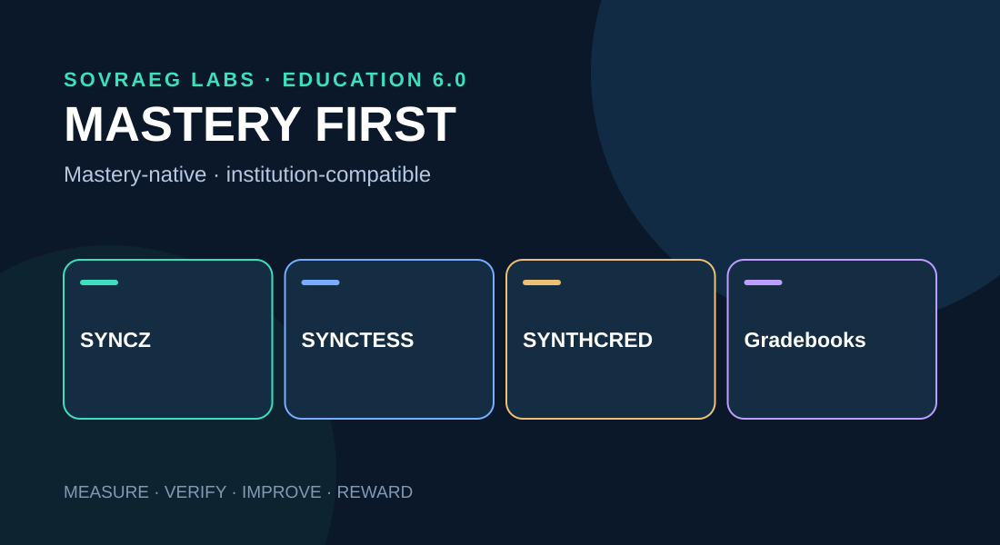

Mastery Learning & Institutional Bridge
A deployable, self-contained chapter in the SOVRAEG Learning Velocity research series, with interactive demonstrations and local media assets.
Research proposal · v0.1
Original user prompt
Mastery before grades
Mastery learning asks whether a learner can demonstrate a defined capability—and what additional instruction, feedback, practice and time are necessary if they cannot yet do so. A conventional grade often compresses such evidence into a single administrative result.
The mastery threshold must stay rigorous even as the time, sequence, media and support adapt. Mastery should reward actual capability, not merely speed or superficial course completion.
A richer mastery-state model
Insufficient valid evidence
Partial skill with substantial support
Progress toward criterion
Meets the defined standard
Re-demonstrates after delay
Performs in appropriate new settings
These stages are a simplified view. Actual mastery records should remain multidimensional, include the assistance condition, and preserve assessment provenance.
Mastery-adaptive trajectories
Hypothetical week-by-week assessments; not a research claim or universal expected effect.
The most useful outcome measures are time to mastery, mastery attainment rate, durability, transfer and learner independence.
Mastery-to-grade translation simulator
Institutions can retain approved gradebook reporting while the underlying system preserves a detailed competency state. Manipulate four criteria to see how an acceptable average can conceal a competency gap.
Not yet mastered
Illustrative institution-specific A–F bands, not a universally valid grade conversion. Actual credit and credentials require authorized policy compliance.
Standards-compatible architecture
Mastery-native core: SYNCZ + SYNCZINE + SYNCTESS + SYNTHCRED. Interoperability engine: competency mappings, evidence, assessment requirements, institutional grade and credit rules. External outputs: LMS gradebooks, academic records, certification reports, open badges and learner records.
| Existing standard | Bridge role |
|---|---|
| 1EdTech CASE | Competency and learning outcome mapping |
| 1EdTech QTI | Assessment item and results portability |
| 1EdTech LTI | LMS integration and authorized grade return |
| Open Badges 3.0 | Verifiable achievements |
| CLR 2.0 | Portable broader learner record |
The mastery record is richer than the grade; the grade cannot reconstruct the full learning evidence. Credential eligibility remains subject to the institution's accredited requirements.
Institutional adoption strategy
Use compatibility-led entry: offer familiar LMS assignments, formative assessment and gradebook workflows that openly include a mastery-evidence upgrade path. Build a trust-and-evidence moat through validated outcomes, usable competency maps, portable records, and effective support networks.
Replace covert sabotage or literal poison-pill tactics with legacy-dependency reduction: institutions voluntarily prefer the richer mastery system because it provides better insight and flexibility, not because their existing systems have been deliberately compromised.
- Assessment enhancement and authorized grade return.
- Competency dashboards and mastery diagnostics.
- Optional SYNCTESS evidence and SYNTHCRED supplements.
- Mastery-gated SYNCZINE pathways with required institutional reporting.
- Portable lifelong learning records across GUILDS and institutions.
Reward authentic mastery
Do not incentivize raw pass rates or rapid completion without quality constraints. Recognize verified mastery uplift, durable retention, independent transfer, time-to-mastery improvements, inclusion, autonomy, and evidence integrity.
Assessment designers should be rewarded for valid and dependable evidence, not high pass rates. Coaches who support learners facing greater difficulties deserve fair compensation independent of aggregate cohort speed. Grades remain translations; mastery remains the objective.